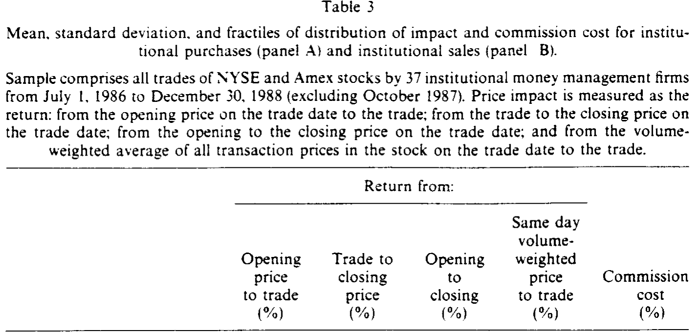
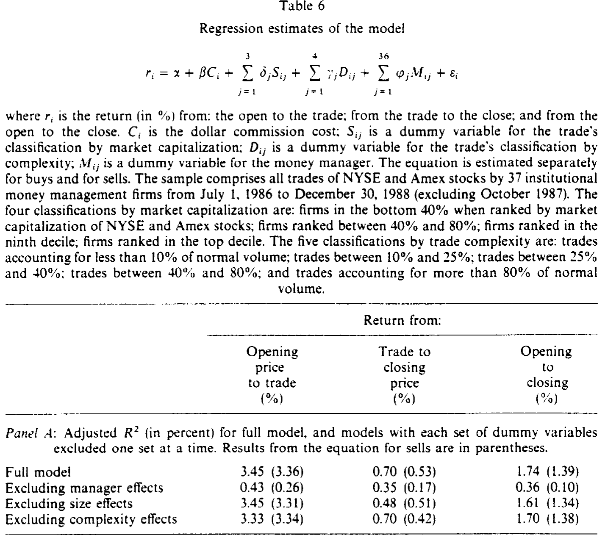
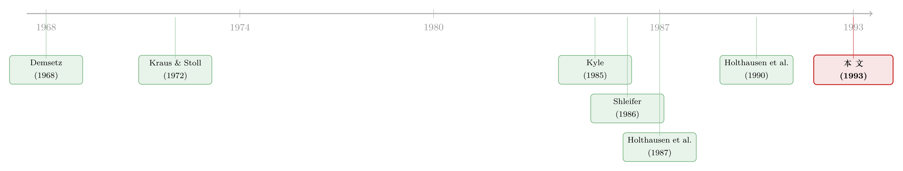

机构买卖股票，价格只动了「八分钱」——而买和卖，根本不是一回事
本文读的是 Chan & Lakonishok (1993, Journal of Financial Economics)：他们拿到一份能同时看清「谁在交易、是买还是卖」的独特数据，发现机构交易对股价的冲击其实小得惊人——一笔买单平均只把价格抬高 0.22%（约合每股八分钱）；更耐人寻味的是，买单的脚印会一路留下、卖单的脚印却几乎被潮水抹平。而真正决定一笔交易冲击多大的，既不是股票市值，也不是交易规模，而是下单的那家公司是谁。
1 引言：一个「人人都信」却没人量准过的常识
关于机构投资者，市场上流传着一个几乎不需要证明的常识：他们财大气粗，动辄成百上千万股地进出，所到之处价格剧烈起伏。Schwartz 和 Shapiro (1990) 估计，1989 年纽约证券交易所大约 70% 的成交量来自会员机构与机构投资者。既然交易越来越集中到这群「大象」手里，那它们一脚踩下去，地面想必是要震一震的——交易所自己的市场波动专门小组在 1990 年的报告里就担忧，机构交易的集中正在放大日内的价格摆动。
可这个常识有个尴尬的软肋：几乎没人真正量准过。
为什么量不准？因为早期研究面对的是一道几乎无解的识别难题。我们能从交易所的成交记录里看到一笔笔交易，却看不到每一笔背后究竟是机构还是散户、是买方主动还是卖方主动。于是大家退而求其次，只盯着 1 万股以上的「大宗交易 (block trade)」做文章——Kraus 和 Stoll (1972) 就是这条路上的开山之作。要判断方向，又只能借助 逐笔涨跌检验 (tick test)：成交价比前一笔低就算卖方发起，高就算买方发起，平价的那些干脆不分类。Holthausen, Leftwich 和 Mayers (1987) 后来发现，这套 tick test 在一批已知是买方发起的样本里，只能正确归类 52.8%——几乎和抛硬币一样。
所以你看，过去文献量出来的那个「大冲击」，从一开始就被两道偏差染了色：它只看最显眼的大单，又只挑那些愿意在涨跌价上成交、急着要立刻成交的不耐烦交易者。难怪 Kraus 和 Stoll (1972) 测出大宗买入会带来 1.41% 的价格变动。
把「急着成交的大单」当成「机构交易的典型」，就像用医院急诊室的病人来估计全城人的健康状况——你看到的，都是最剧烈的那一端。
本文的两位作者手里，恰好攥着一把能绕开这两道偏差的钥匙。
2 数据：一份「连对手是谁都写明了」的成交簿
本文用的数据来自 SEI 公司——一家专门服务机构投资者的咨询机构。它记录了 37 家大型基金管理公司从 1986 年 7 月到 1988 年底（剔除了 1987 年 10 月那场崩盘）的全部交易。
这份数据的珍贵之处，在于它把过去看不见的东西全摊在了桌面上：每一笔交易都明确标着是买入还是卖出，还带着一个数字代码，告诉你是哪家管理公司下的单。换句话说，作者不再需要 tick test 去猜方向，也不再被迫只盯着大单——大单小单、买方卖方，尽收眼底。
样本有多大？1,215,387 笔交易，成交金额 $5,387.6 亿美元，占同期 NYSE 与 Amex 美元成交额的约 5%。这比以往任何一项研究都大得多。
接着，一个出乎意料的事实跳了出来：机构的交易，大多很小。买单平均每笔只有 8,400 股，卖单 9,100 股，而中位数更只有 2,400 股和 2,700 股；约 25% 的交易不足 1,000 股，只有约 20% 超过 1 万股。中位数交易的金额还不到 $100,000，只有约 6% 超过 100 万美元。更关键的一个刻度是：一笔典型机构交易，只占该股正常日成交量的 2%。
这意味着什么？意味着一笔典型的机构交易，根本不是什么大事件。大象进场，多数时候是踮着脚的。这种「化整为零」的下单方式本身就是一条线索：机构在策略性地拆单，以躲开短期流动性成本和信息暴露的代价。（关于「哪一档大小的单子才真正推动股价」，可参见《谁的单子在悄悄推着股价走？》。）

Table 3
3 识别：怎样把一笔交易的冲击「拆」成三段
有了方向明确的成交簿，怎么量价格冲击 (price impact)？本文的做法朴素却有力：拿每一笔交易的成交价，去和当天几个基准价比。
设开盘价为 \(P_o\)、成交价为 \(P_t\)、收盘价为 \(P_c\)，作者计算了三段收益率，它们之间满足一个简单的恒等式：
$$ r_{o\to t} + r_{t\to c} = r_{o\to c} $$
按 Holthausen et al. (1987) 的语言，这三段分别对应：
- \(r_{o\to t}\)（开盘到成交）——总效应 (total effect)：交易发生时价格已经被推到了哪里；
- \(r_{t\to c}\)（成交到收盘）——暂时效应 (temporary effect)：成交之后，价格是回吐了还是继续走；
- \(r_{o\to c}\)（开盘到收盘）——永久效应 (permanent effect)：一天结束时，真正留下来的那部分。
为什么要这么拆？因为这三段的时间形态，恰好能把三种相互竞争的假说区分开来：
第一，短期流动性成本 (short-run liquidity cost)。 大单一时找不到对手，必须用价格让步去「请」出买家或卖家，做市商提供流动性、再靠价差获得补偿。这套故事的指纹是：价格被推开之后，会及时回到原位——也就是暂时效应大、永久效应小。
第二，不完全替代 (imperfect substitution)。 如果一只股票没有完美替代品，需求曲线就是向下倾斜的：卖方要打折才能让买家吞下多出来的股票，买方要溢价才能买到。这套故事的指纹是价格变动永久、或回吐得很慢。（关于「需求曲线到底斜不斜」，可参见《想买走一家公司千分之一的股票，得把价格推高百分之一》。）
第三，信息效应 (information effect)。 如果交易泄露了私有信息——卖方觉得高估、买方觉得低估——价格就会永久地调整到新均衡。
此外，作者还引入了第四个基准：当天所有成交价的 成交量加权平均价 (volume-weighted average price, VWAP)。Berkowitz, Logue 和 Noser (1988) 主张，成交价相对 VWAP 的偏离，正是一个干净的执行成本度量。
本文聚焦于主成本加权平均 (principal-weighted average)，即按每笔交易的美元规模加权——这既贴合投资业界的惯例，也能直接评估整体的美元冲击。下文给出的核心数字都是这个口径。
4 主要结果：八分钱，和一道意料之外的不对称
先看买入（表 3 的 A 栏）。机构买入的成交价，主成本加权平均比当天开盘价高 0.22%。这是多少钱？在一只均价 $36.50（全样本的成交量加权均价）的股票上，约合每股八分钱，不到一个最小价位。成交之后，价格不但没回吐，反而又涨了 0.12%；于是从开盘到收盘的永久效应是 0.22% + 0.12% = 0.34%。
0.34%——请把这个数字和 Kraus 和 Stoll (1972) 的 1.41%、Holthausen et al. (1990) 的约 1% 摆在一起看。本文的冲击只有前人的零头。差距从哪来？正是第 1 节那两道偏差：前人只看大宗、又靠 tick test 筛掉了平价交易、留下了最不耐烦的那批交易者。
别忘了，这 0.34% 里还掺了一点「水分」：同期标普综合指数从开盘到收盘的平均涨幅是 0.06%，市场本身就有一点日内上行漂移。
再看 VWAP 基准：买入的美元加权冲击只有 0.02%，小到几乎可以忽略；若用简单平均，冲击甚至略为负——按 Berkowitz, Logue 和 Noser (1988) 的解释，这意味着买入的平均执行成本竟是负的！
现在，真正关键的一步来了。把目光转向卖出（表 3 的 B 栏），一道漂亮的不对称浮现出来：
机构卖出时，价格从开盘到成交下跌 0.14%——这和买入是对称的。但成交之后，价格几乎完全反弹了回去（+0.10%），最终的永久效应只剩 -0.04%。
把买卖放在一起，这道不对称刺眼得无法忽视：
- 买单：推上去
0.22%，之后继续涨0.12%，永久留下0.34%——价格记住了这笔买入。 - 卖单：压下去
0.14%，之后反弹0.10%，永久只剩-0.04%——价格几乎忘掉了这笔卖出。
同样一笔机构交易，买和卖，竟是两副面孔。
5 不对称从哪来：买单有「话」要说，卖单只是要「钱」
于是一个自然的问题是：为什么买入的痕迹是永久的、卖出的痕迹却是暂时的？
把它对到第 3 节那三套假说上，答案就清晰了。卖出之后价格几乎完全反弹，这正是短期流动性成本的指纹——卖家暂时找不到对手，用价格让步换取即时性，事后价格自然归位；它不太像信息或不完全替代在起作用。而买入之后价格不回吐、反而续涨，则更像信息效应或不完全替代：市场把这笔买入当成了一条值得相信的消息。
本文为这道不对称给出了几个推测：
其一，买卖的「动机纯度」不同。 一只股票，能买的有成千上万只候选，机构买它，往往是主动从一个庞大的池子里精挑细选出来的——这笔买入因此更可能携带信息。而卖，多半只能卖手里已经持有的那些；机构卖股票，常常只是为了腾出现金去做别的事，是流动性驱动、而非信息驱动的。买是「我看好它」，卖往往只是「我需要钱」。
其二，大额卖出比大额买入更容易完成。 前人早就发现，下跌价（downtick）上成交的大宗远多于上涨价（uptick）上的大宗，一个解释就是卖比买更容易找到对手；这也和本文「卖单略大于买单」的发现一致。
其三，成交后的续涨可能来自后续跟单。 买入之后价格继续走高，也许是同一位经理把这笔买入当成更大交易计划的一部分继续推进，也许是别的经理在「羊群行为 (herding)」式地跟进。
这道买卖不对称，是本文最迷人的发现，也启发了后续一整支文献。（关于「为什么买比卖更让市场动容」，可进一步参见《为什么「买」比「卖」更让市场动容？——一个藏在基金交易规则里的解释》。）
6 反转：真正主导冲击的，是「谁」在交易
到这里，故事似乎该收尾了：机构冲击不大，且买卖有别。但本文还埋了一个更有意思的横截面发现。
直觉上，一笔交易的冲击该由两样东西决定：股票的市值（越小越难交易）和交易的相对规模（占日成交量越大越难消化）。本文确认，这两者确实有影响——小公司里一笔交易往往是更显著的事件（第 1 组中位数交易达日成交量的 0.24，而最大的第 4 组只有 0.01）。
但真正主导价格冲击的，既不是市值，也不是交易规模，而是下单的那家管理公司是谁。如表 6 所示，在控制了股票特征和交易规模之后，管理公司身份对冲击的解释力压过了其余因素——不同公司之间的执行表现存在相当大的差异。

Table 6
这是一个有政策含义的结论：执行成本不是命中注定的「市场摩擦」，而是可被管理、因人而异的。这也解释了为什么机构愿意在交易设施与人员上重金投入——Bodurtha 和 Quinn (1990) 早就指出，执行成本不仅不可忽略，而且可控。
7 交易成本：竞争激烈到「找不到」一个像样的冲击
把这些数字翻译成投资业最关心的语言——双边交易成本（round-trip cost）。
一位经理如果在买和卖时各让出八分之一个价位（one-eighth point），在一只典型股票上的双边成本约为 0.68%。而本文测算，在所有交易上汇总、扣除一切之后，整体的双边市场冲击成本很难超过 0.36%。再看佣金：买卖的主成本加权佣金率都是 0.17%（均价股票上每股约六分钱），简单平均 0.23%——远低于 Stoll 和 Whaley (1983) 报告的 1960–1979 年间大股票 1.01% 的水平。
如此微薄的冲击，本身就是对投资业竞争之激烈的一种注脚。它也呼应了 Perold (1988) 提出的「执行落差（implementation shortfall）」之问：基金跑不赢被动基准，未必是选股无能，而可能是交易执行在悄悄吃掉收益——只不过，本文的数字告诉我们，这口「成本」远比想象的小。
8 文献脉络
这条研究的源头，是两个相互交织的问题：交易为什么会推动价格，以及怎么把这个推力量准。
最早，Demsetz (1968) 把价格冲击理解为订单处理成本——做市商提供即时性，理应得到补偿。随后 Kraus 和 Stoll (1972) 用纽交所的大宗交易第一次系统地测量了这个推力，成为这条线的奠基之作。理论侧，Kyle (1985) 与 Easley、O'Hara (1987) 把价格冲击锚定到信息上：知情者的交易必然移动价格。与之竞争的是 Scholes (1972) 到 Shleifer (1986) 的需求弹性视角——如果股票没有完美替代品，需求曲线向下倾斜，单是供需失衡就能改变价格。

到了 Holthausen, Leftwich 和 Mayers（1987, 1990），大宗交易的「暂时—永久」分解被精细化，但方向识别始终卡在 tick test 的精度上（Lee 和 Ready (1991) 对此有系统检验）。本文的位置，正是在这条脉络的方法论瓶颈处插了一刀：它用一份方向与身份都已知的数据，绕开了 tick test，也绕开了「只看大单」的样本偏差，从而把机构交易的平均冲击——而非最不耐烦那批交易者的冲击——量了出来。它与同组的 Lakonishok, Shleifer 和 Vishny (1992a) 关于机构交易的研究互为表里。（关于机构交易在更长窗口、更宏观层面的价格效应，可参见《新闻里都说『基金一进场，股市就涨』——可这话只对了一天》。）
9 评论与延伸（Q&A + 研究方向）
(a) 几个可能的疑问
Q：本文和经典的大宗交易研究，区别到底在哪？
关键差在「样本是谁」。大宗交易研究只看 1 万股以上的单子、且靠 tick test 推方向，结果筛出的是最急于成交的不耐烦交易者，冲击自然偏大（Kraus-Stoll 的
1.41%）。本文的数据方向与下单方明确，覆盖大单小单、买卖两方，量的是机构改变持仓组合的平均冲击（0.34%）。两者不是矛盾，而是「急诊室样本」与「全人群样本」的区别。
Q：0.34% 这么小，会不会是样本期太特殊、又剔掉了 1987 年 10 月？
剔除崩盘月是为了避免极端值污染，方向上反而让结果更保守可信。作者也坦承，与早期研究的差异部分源于时代变迁：到 1980 年代后期，成交量与技术、佣金率、对冲工具都已剧变，交易成本本就该比 1983 年前低。所以小冲击既是数据优势的结果，也是时代的结果。
Q：为什么「买卖不对称」就能区分那三套假说？
因为三套假说预测的时间形态不同。流动性成本预测价格被推开后回吐（暂时），不完全替代和信息预测价格留下（永久）。卖出后几乎完全反弹 → 像流动性故事；买入后不回吐还续涨 → 像信息/不完全替代。是「成交后价格走向」这个时间维度，而非冲击的绝对大小，承担了识别。
Q：主成本加权平均和简单平均差这么多，哪个才算数？
看你问的是什么。简单平均回答「一笔典型交易的冲击」（买入永久效应
0.26%，中位数甚至为零）；主成本加权回答「每一块钱的资金平均承受的冲击」（0.34%），后者才是衡量整体美元成本、贴合业界口径的数。两个都对，但回答的是不同问题。
Q：「经理身份主导」会不会只是「投资风格」的代理？比如成长 vs 价值？
这是本文识别上最值得追问的一点。管理公司身份的解释力，很可能裹挟着无法观测的下单策略（市价单还是限价单、拆单节奏）、投资风格（主动/被动、成长/价值）乃至交易标的的选择。本文只能说「身份这个维度信息量最大」，却难以把「是这家公司更会交易」与「它恰好交易了更好做的股票」彻底分开。
Q：VWAP 基准下买入执行成本接近零、甚至为负，这可信吗？
这是个有趣但需小心的结论。相对 VWAP 为负，按 Berkowitz-Logue-Noser 的解释是「负执行成本」，但更可能是机制性的：机构常把单子拆散、贴着全天均价执行，成交价自然贴近 VWAP。它说明的更多是「机构擅长贴着均价交易」，而非真的天上掉馅饼。
(b) 几个可能的研究问题与提案
1. 把「买卖不对称」搬到公司债市场。
【经济故事】公司债流动性差、做市商库存约束更紧，「卖出靠流动性让步、买入携带信息」的不对称应当更强——尤其在信用利差扩大的压力期。
【可行性】中。TRACE 有逐笔成交但不披露交易方身份；可借助保险公司持仓（NAIC）或债券基金持仓数据，从持仓变动反推买卖方向，识别买卖冲击的不对称。难点是缺乏「经理身份」标签，需用机构类型替代。
2. 「经理身份主导」中，外资经理是不是一类特殊的身份？ 【经济故事】若冲击的主导因素是下单方，那么外资 vs 本土经理的执行差异就是一个干净的切口：他们信息劣势、下单节奏与本地经理不同，冲击形态也应不同。 【可行性】中—高。韩国交易所（KRX）等市场提供按投资者类型标记的逐笔数据，可直接复制本文方法，对照外资与本土机构的买卖冲击。可与《外资真有「信息劣势」吗？——首尔交易簿里那 37 个基点的真相》对话。
3. 这道不对称，在算法交易与十进制报价之后还在吗？ 【经济故事】本文是 1980 年代后期、八分之一报价、人工撮合的产物。十进制化、暗池、算法拆单普及后，买卖不对称可能被熨平，也可能因「卖压更难隐藏」而放大。 【可行性】中。需要现代的、方向已知的机构成交数据（如 ANcerno），方法可直接平移，重点是做跨时代对比。
4. 经理身份的冲击差异，是「技能」还是「运气」？ 【经济故事】若某些公司系统性地以更低冲击执行，这种执行优势应当能预测其后续净业绩——把交易成本与基金 alpha 连起来。 【可行性】中。需把交易级数据与基金业绩面板拼接，识别难点在于把「执行技能」从「标的选择」中剥离，可用同一标的、同期不同公司的冲击差异做内部对照。
10 评述者的判断
贡献。 本文的贡献是「数据驱动的祛魅」：它用一份当时罕见的、方向与下单方都已知的成交簿，一举推翻了「机构交易必有大冲击」的流行印象，把平均冲击钉在了 0.34%（买）/-0.04%（卖）这样的小数上；更重要的是，它提炼出了买卖不对称这一可被后续理论检验的实证规律，并指出下单方身份才是冲击的主导维度。这两点都极具生命力。
对识别的担忧。 我最大的保留在第 6 节那个最漂亮的结论上。「管理公司身份」是一个复合变量，它同时吸纳了下单策略、投资风格、标的选择与不可观测的交易动机；在缺乏对这些维度的细分控制时，「身份主导」更像是一个待解释的事实，而非一个干净的因果机制。此外，因 SEI 数据没有时间戳，作者无法对齐「经理决定交易的那一刻」的市场状态，只能退到日内基准，这使得「开盘前的价格漂移究竟是机构被动跟随、还是主动推动」始终无法完全厘清——作者自己也诚实地点出了这一点。
后续想看到什么。 我最想看到的，是把这套「方向+身份已知」的识别，搬到信用市场与外资持有人上去检验买卖不对称的边界条件：在流动性更脆弱、信息更不对称的环境里，那道不对称是会被放大，还是会换一副面孔？这也正是本文留给我们的、最值得继续走下去的一条路。
参考文献
- Amihud, Y., & Mendelson, H. (1980). Dealership market: Market-making with inventory. Journal of Financial Economics 8(1), 31–53.
- Berkowitz, S., Logue, D., & Noser, E. (1988). The total cost of transactions on the NYSE. Journal of Finance 43(1), 97–112.
- Bodurtha, S., & Quinn, T. (1990). Does patient program trading really pay? Financial Analysts Journal 46(3), 35–42.
- Chan, L. K. C., & Lakonishok, J. (1993). Institutional trades and intraday stock price behavior. Journal of Financial Economics 33(2), 173–199.
- Demsetz, H. (1968). The cost of transacting. Quarterly Journal of Economics 82(1), 33–53.
- Easley, D., & O'Hara, M. (1987). Price, trade size, and information in securities markets. Journal of Financial Economics 19(1), 69–90.
- Holthausen, R., Leftwich, R., & Mayers, D. (1987). The effect of large block transactions on security prices: A cross-sectional analysis. Journal of Financial Economics 19(2), 237–268.
- Holthausen, R., Leftwich, R., & Mayers, D. (1990). Large-block transactions, the speed of response, and temporary and permanent stock-price effects. Journal of Financial Economics 26(1), 71–95.
- Kraus, A., & Stoll, H. (1972). Price impacts of block trading on the New York Stock Exchange. Journal of Finance 27(3), 569–588.
- Kyle, A. (1985). Continuous auctions and insider trading. Econometrica 53(6), 1315–1335.
- Lakonishok, J., Shleifer, A., & Vishny, R. (1992). The impact of institutional trading on stock prices. Journal of Financial Economics 32(1), 23–43.
- Lee, C., & Ready, M. (1991). Inferring trade direction from intraday data. Journal of Finance 46(2), 733–746.
- Perold, A. (1988). The implementation shortfall: Paper versus reality. Journal of Portfolio Management 14(3), 4–9.
- Scholes, M. (1972). The market for securities: Substitution versus price pressure and the effects of information on share prices. Journal of Business 45(2), 179–211.
- Schwartz, R., & Shapiro, J. (1990). The challenge of institutionalization for the equity markets. Working paper, New York University.
- Shleifer, A. (1986). Do demand curves for stocks slope down? Journal of Finance 41(3), 579–590.
- Stoll, H., & Whaley, R. (1983). Transaction costs and the small firm effect. Journal of Financial Economics 12(1), 57–80.